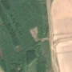

1,1 ha · Lătești, com. Bordușani
văzută schimbată prima dată pe 17 iun. 2026

Autorizația cea mai apropiată nu acoperă tăierea: schimbarea cade în afara parcelei autorizate.
APV 2500121500560 · Ocolul Silvic Fetești, la 88 m
Terenul: pădure de stat, după amenajamentul silvic publicat.
Ce se vede în poze: În poza detaliată zona marcată era acoperită de pădure deasă, iar în «înainte» (mai 2026) era verde. În «după» apare o pată deschisă, aproape fără copaci, care iese clar în evidență față de pădurea verde din jur, deci probabil copacii au fost tăiați.
în arie protejată: Bordușani - Borcea, Brațul Borcea